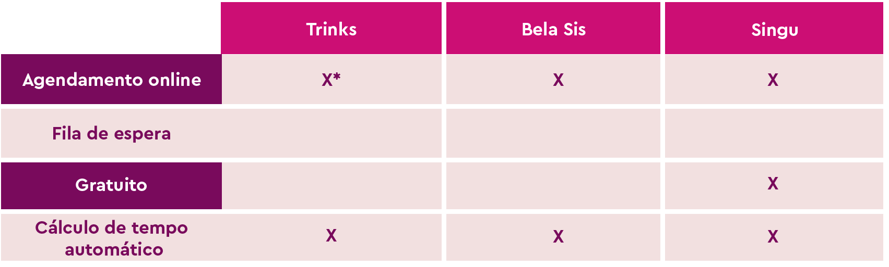
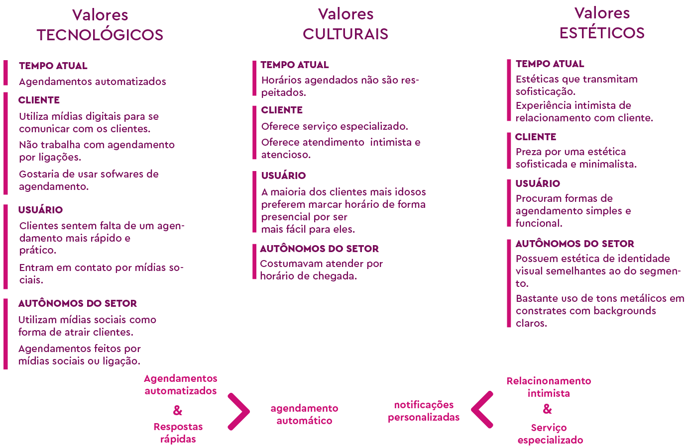
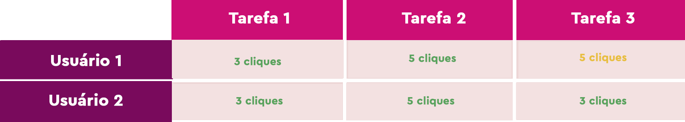
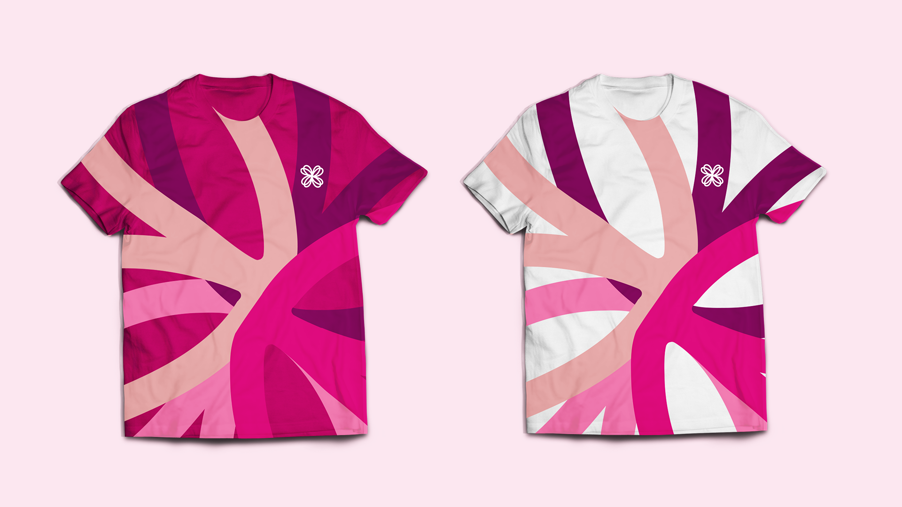
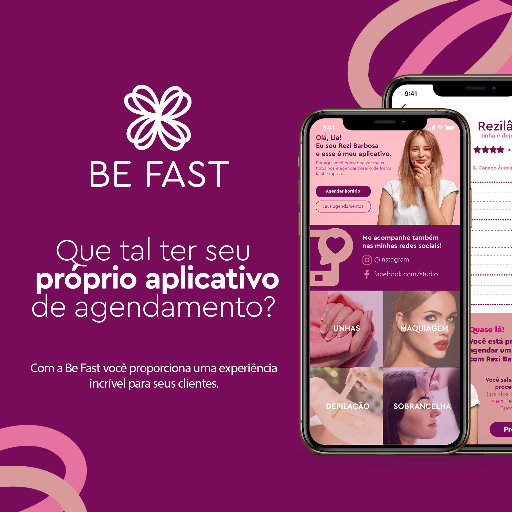

Be Fast
Como o UX Design foi utilizado para ajudar autônomos da área da beleza que enfrentavam dificuldades com o cenário pós pandemia.
Este projeto foi desenvolvido na cadeira de Projeto Integrado I 2020.1 no curso de Design Digital na Universidade Federal do Ceará. Nesta cadeira nos foi dado a oportunidade de criar uma solução que resolvesse o problema de alguém.
Problema
Diante do cenário pós-pandemia, foi necessário reinventar-se para voltar a atender os clientes com segurança. Antes desse período, alguns estabelecimentos de beleza em Quixeramobim atendiam por ordem de chegada, o que nos dias atuais se tornou inviável, tendo em vista que o atendimento por horário marcado agora é obrigatório. Esse processo é feito manualmente, de forma que os clientes precisam entrar em contato com o estabelecimento informando o serviço desejado e perguntando quais os horários disponíveis, tornando-se assim demorado e cansativo, e muitas vezes cheio de atrasos.
Objetivo
Desenvolver um sistema de agendamento no qual os clientes possam marcar o serviço desejado de acordo com o horário disponível ou desmarcar, além de oferecer a oportunidade de entrar na lista de espera caso o horário reservado já esteja ocupado. Na prática, pretende-se minimizar os fatores sociais, pessoais e de atendimento, a fim de gerar uma melhor experiência durante o agendamento e atendimento.
Público Alvo
Mulheres, entre 12 e 60 anos, residentes em Quixeramobim e regiões do sertão Central, que desejam fazer unha, maquiagem, depilação e sobrancelha com Rezilâne Barbosa.
Personas

Cenário
Atores: Andreza Nunes e Luana Lima
Andreza Nunes irá viajar no dia 16/10 para uma consulta médica e, por
esse motivo, ela deseja agendar um horário para fazer sua unha e
sobrancelha. Entretanto, ela só pode ir em horários pela manhã, já que a
tarde precisa assistir suas aulas online. Por essa razão, no dia 12/10 às 13:50,
Andreza envia uma mensagem pelo whatsapp solicitando saber qual o
horário disponível para tal dia pela manhã e fica no aguardo da resposta de
Rezi.
Luana Lima, que apesar de sempre agendar por antecedência, foi
convidada para sair e por isso deseja marcar um horário para depilação no
mesmo dia em que Andreza. Então, Luana sai de sua loja às 16:40 e vai até o
estúdio para perguntar se há disponibilidade no dia em questão. Então,
Rezi marca a última vaga disponível para Luana.
Após o fim do expediente, Rezi irá responder as mensagens de suas
mídias sociais e ao ver a de Andreza, informa que não há mais horário
disponível para o dia 16/10.
Apesar de Andreza ter solicitado a vaga antes, ela não ficou com a
mesma, pois Luana foi agendada primeiro. Se houvesse um aplicativo,
Andreza teria conseguido a vaga, e Luana, embora não conseguisse, não
precisaria se deslocar até o local para obter respostas mais rápido.
Benchmarking
*Agendamento online no app Trinks necessita de aprovação do autônomo mesmo com o horário disponível em agenda.
*Singu funciona como se fosse um Uber de beleza, fugindo da proposta de ser um aplicativo de agenda, porém entra no segmento de autônomos da beleza.
*Nenhuma dos aplicativos apresenta a opção de fila de espera.
Pesquisa quantitativa
Questionário - clientes da área da beleza
As perguntas do questionário foram elaboradas a partir do que se era desejado saber em relação ao agendamento e contato por parte dos clientes com seus profissionais. No questionário consegui obter dados importantes, como o fato de clientes preferirem autônomos, pois eles oferecerem atendimento mais intimista e mais comprometimento em relação a horários.
Pesquisa qualitativa
Entrevista semi-estruturada com autônomo
As perguntas da pesquisa qualitativa foram elaboradas a partir do que se era desejado saber em relação a rotina da profissional. A Entrevista foi feita com intenção de aprofundar pontos no qual ainda não tinhamos informações concretas, como por exemplo: Como ela organizava seu tempo, se ela possuia algum horário específico para responder os clientes, quanto cancelamentos sem aviso prévio em média ela tinha por semana. Nessa etapa, obtive dados importantes em relação a atrasos por parte dos clientes e da profissional, além de entender como funciona a administração do tempo da mesma.
Estratégia de design
Identidade visual

Protótipo de alta fidelidade
Teste de usabilidade
O Teste de Usabilidade pede que o usuário realize tarefas pré-determinadas pelos avaliadores de forma presencial. O teste foi realizado com duas pessoas que estão enquadradas no perfil de usuário.
Tarefa 1: entrar na lista de espera.
Tarefa 2: agendar horário para o dia 23/10 às 14:30.
Tarefa 3: cancelar o horário agendado.

O parâmetro de avaliação utilizado foram os cliques, pois como as tarefas propostas poderiam ser realizadas em poucos segundos, se a análise e comparação de dados fosse feita com base no tempo, ela se tornaria mais difícil e menos precisa.
As duas primeiras tarefas apresentaram a melhor quantidade de cliques possível, isso quer dizer que o usuário conseguiu realizar sua tarefa facilmente, não precisando dar voltas no aplicativo ou clicar mais do que o necessário.
Na terceira tarefa, o usuário 1 deveria cancelar o horário agendado, porém, ao chegar no item c (clicar em sim), ele acabou clicando em “não”, sendo assim, precisou utilizar mais dois cliques para terminar esta tarefa.
Conclui-se que será necessário realizar mais testes de usabilidade a fim de testar melhor o protótipo, entretanto, a maioria das tarefas foram realizadas com a melhor quantidade de cliques possível.
Leia o resultado completo do teste de usabilidade
Aplicações da marca
 
Conclusão e aprendizados
Apesar de ser um projeto antigo no qual atualmente eu melhoraria algumas coisas, decidi manter no meu portfólio pois o Be Fast agregou muito ao meu conhecimento. Atráves dessa cadeira tive o primeiro contato prático com o UX design, no qual precisei estudar afundo o problema para desenvolver a solução.